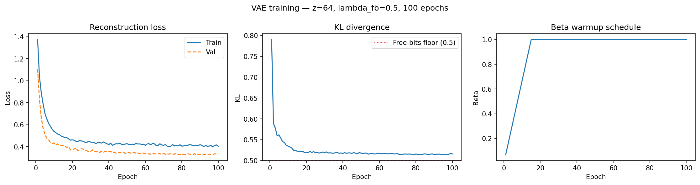
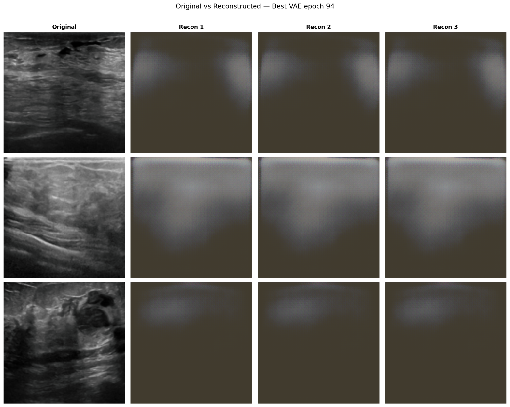
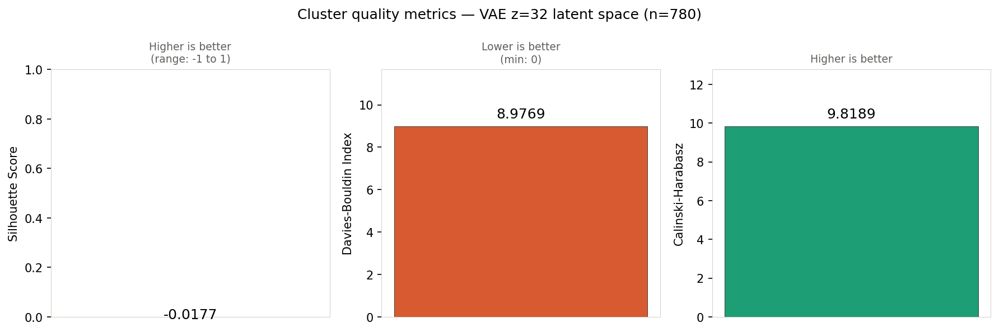
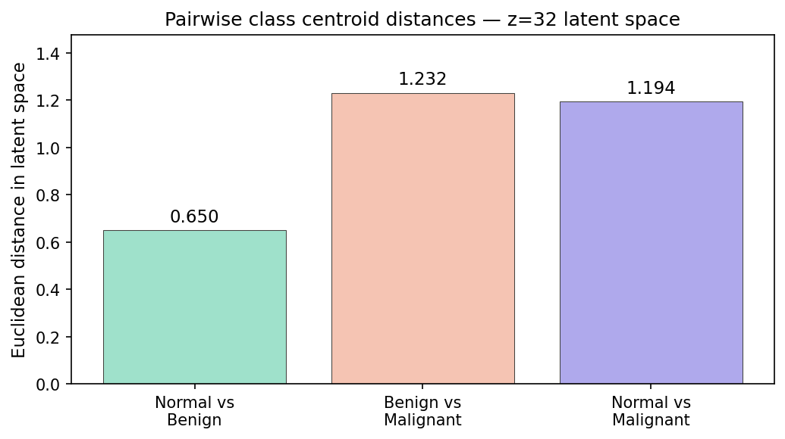
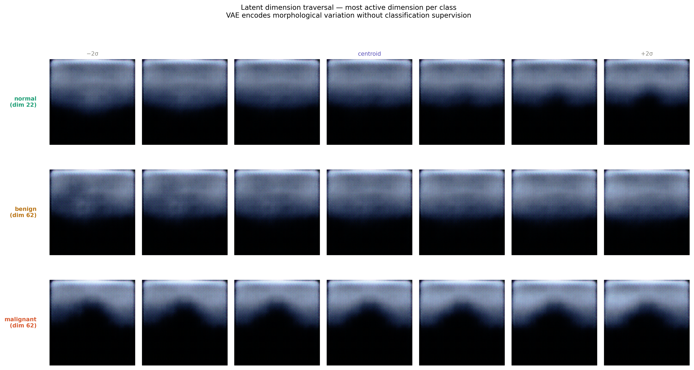
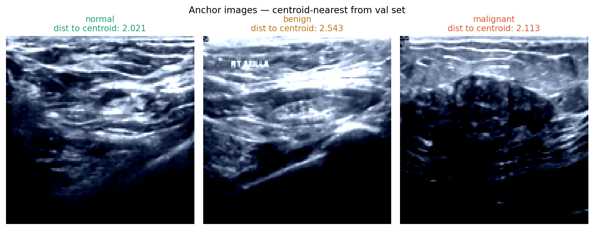

Problem
Breast ultrasound images contain high visual variability and subtle tissue patterns, making representation learning important for medical AI.
Accepted Research • IntelliSys 2026 • Amsterdam
A Variational Autoencoder study analyzing how KL regularization shapes latent space structure, reconstruction quality, and medical image representation learning.
Research Overview
Breast ultrasound images contain high visual variability and subtle tissue patterns, making representation learning important for medical AI.
A PyTorch-based Variational Autoencoder was trained to reconstruct images while learning a structured latent representation.
The latent space was evaluated using UMAP, t-SNE, cluster metrics, centroid distances, and latent traversal.
The work was accepted at IntelliSys 2026 in Amsterdam, Netherlands.
Key Visualization

Results Gallery

Training loss, reconstruction behavior, KL divergence, and beta warmup during optimization.

Original and reconstructed ultrasound images showing the quality of learned representations.

Quantitative evaluation of latent separability and cluster organization.

Class-level distance analysis for interpreting separation in latent space.

Latent dimension traversal showing how representation shifts affect reconstructed outputs.

Representative examples used to support interpretation of latent structure.
Research Status
Accepted for presentation at the Intelligent Systems Conference 2026 in Amsterdam, Netherlands.